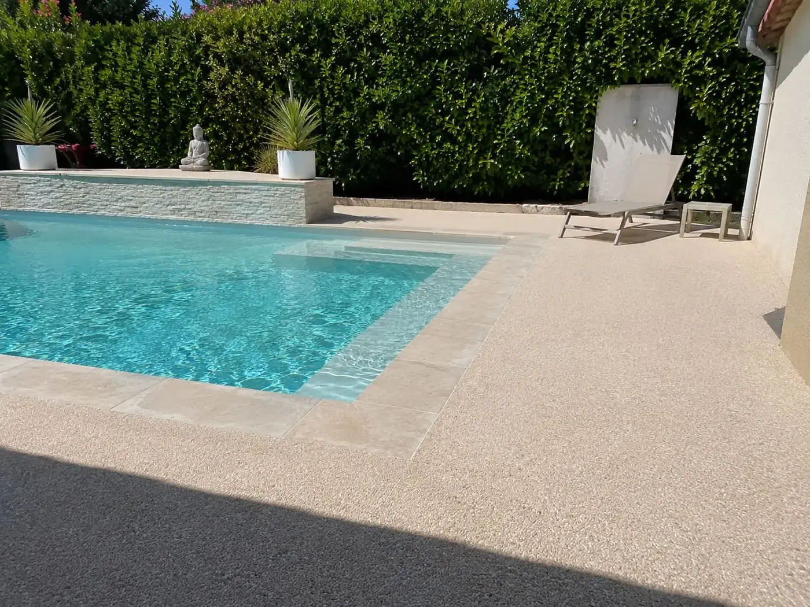
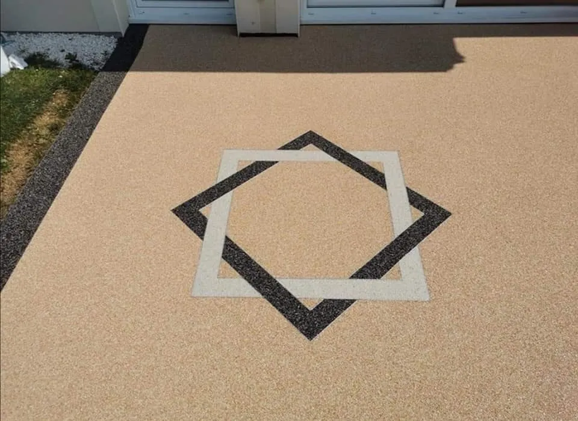

Accueil › Plage de piscine en moquette de pierre
Nos prestations
Plage de piscine en moquette de pierre
Autour d’une piscine, le sol doit être sûr, agréable pieds nus et sécher vite. C’est exactement ce qu’apporte la moquette de pierre : antidérapante, drainante et douce sous le pied.

Un sol pensé pour le bord de l’eau
-
Antidérapant
Le grain de la pierre accroche même mouillé : moins de risques de glissade, notamment pour les enfants.
-
Doux pieds nus
Les granulats de marbre roulés sont agréables sous le pied, contrairement à un béton brut.
-
Sèche vite
L’eau des éclaboussures s’infiltre dans le revêtement au lieu de former des flaques.
-
Assorti aux margelles
Le coloris est choisi pour s’accorder avec les margelles et la teinte de l’eau.

Bien choisir son coloris
Au soleil, un sol clair reste plus frais sous le pied qu’un sol foncé. Autour d’une piscine, nous conseillons donc souvent les teintes claires : crème, beige, gris clair.
Une bande décorative peut souligner le bassin ou délimiter la zone des transats.
Comment se déroule le chantier
-
01
Visite et devis
Mesure de la plage, contrôle du support et choix du coloris.
-
02
Préparation
Nettoyage, réparation et primaire d’accrochage. Les margelles et le bassin sont protégés.
-
03
Pose
Mélange des granulats et de la résine, étalé puis lissé à la taloche jusqu’aux margelles.
-
04
Séchage
Le temps de séchage dépend de la météo : nous vous indiquons le délai précis le jour de la pose.
Questions fréquentes sur les plages de piscine
Est-ce que ça chauffe au soleil ?
Comme tout sol extérieur, un peu. Les coloris clairs restent plus frais : nous vous conseillons lors du choix des teintes.
Peut-on poser sur l’ancienne plage carrelée ?
Oui, si le carrelage est sain et bien collé. Il est préparé avant la pose.
Comment entretenir une plage de piscine en moquette de pierre ?
Un rinçage régulier à l’eau claire suffit la plupart du temps. Nous vous donnons les conseils d’entretien adaptés à la fin du chantier.
Un projet autour de votre piscine ? Parlons-en.
Visite et devis gratuits. Nous étudions votre espace et vos envies afin de vous proposer une réalisation sur mesure.
Basés à La Planche, nous intervenons à Nantes et dans toute la Loire-Atlantique ainsi que dans le nord de la Vendée : Rezé, Vertou, Saint-Sébastien-sur-Loire, Bouguenais, Les Sorinières, Pont-Saint-Martin, Clisson, Pornic, Montaigu et leurs alentours.